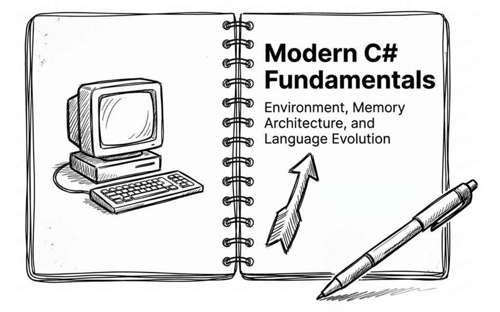

第 1 章：基礎

本章會先介紹基本的開發環境，再探討 .NET 執行環境與 C# 型別系統的核心運作原理。這裡不談簡單的 if/else 和迴圈，而是直接切入後續學習 C# 進階特性所需的基礎觀念。
1.1 C# 的設計哲學
C# 是物件導向（object-oriented）語言，強調封裝、繼承和多型。但從 C# 3.0 開始，它大量引入了函數式程式設計（functional programming）的精華：
| 函數式特性 | C# 中的實作 |
|---|---|
| 函式可作為值傳遞 | 委派（delegate）與 lambda 運算式 |
| 宣告式資料處理 | LINQ 查詢運算式 |
| 不可變性 | record、readonly struct、init 存取子 |
| Pattern matching | switch 運算式、is 運算子 |
這就是 OOP + FP 混合設計：C# 兼具了物件導向的組織力與函數式的表達力。本書後續介紹的 record、pattern matching 和 LINQ，都源自這個哲學。
名詞釋疑
在程式語言中，expression（運算式）通常指的是「可以被計算（evaluate）並回傳一個值的程式碼片段」。另一方面，statement（陳述式）則是執行一個動作，通常不直接傳回值。
接著來看它的型別系統。
型別安全：編譯器是你的第一道防線
C# 是一門強型別（strongly typed）語言，型別規則非常嚴格：
- 靜態型別（static typing）：變數的型別在編譯時期就已確定，編譯器會在程式執行前檢查型別錯誤。
- 強型別（strong typing）：不允許隱含的危險型別轉換。例如，你不能把
double直接賦值給int，必須明確轉型。
這樣不僅能提早發現錯誤，也能降低執行時期出錯的機率。現代 C# 的許多功能（如 Nullable Reference Types）都在強化這張安全網。
下面這段程式碼示範了 C# 如何阻止可能遺失資訊的隱含轉型：
// 編譯器會阻止這種危險操作
double pi = 3.14159;
int rounded = pi; // ✗ 編譯錯誤：無法隱含轉換
int rounded2 = (int)pi; // ✓ 明確轉型，開發者知道會無條件捨去小數在這個例子裡，編譯器不是禁止你轉型，而是要求你把「可能遺失資訊」這件事寫清楚。這種設計讓危險操作不會在程式碼裡悄悄發生。
也就是說：讓編譯器幫你減少潛在 bugs。從型別安全、null 安全、pattern matching 到 record 的值相等性，每一項功能都在減少執行時期的意外。
1.2 快速上手
本節會建立一個最簡單的 .NET 專案，並觀察它如何編譯與執行。我們先使用命令列介面（CLI），藉此理解 .NET 專案結構與建置流程（build pipeline）。
必備工具
在開始之前，請先安裝 .NET 10 SDK（或更新版本）。開發工具可依個人偏好選擇：Visual Studio 2026 Community（功能完整的 IDE）、Visual Studio Code（輕量跨平台），或 JetBrains Rider。
你的第一個 .NET 專案
打開終端機，執行以下指令建立並執行一個 Console 應用程式：
dotnet new console --name HelloCSharp
cd HelloCSharp
dotnet run終端機會輸出：
Hello, World!專案目錄中會產生兩個核心檔案：
HelloCSharp.csproj：專案檔，定義目標架構與相依套件。Program.cs：程式進入點，預設只有一行程式碼：
// See https://aka.ms/new-console-template for more information
Console.WriteLine("Hello, World!");現代 C# 專案預設啟用「頂層語句（top-level statements）」，編譯器會自動為你產生包含 Program 類別與 Main 方法的外框，因此不需要手寫樣板程式碼。
當你輸入 dotnet run 時，整個背後流程包含三個階段：
dotnet new：根據範本產生專案檔（.csproj）與程式檔（Program.cs）。dotnet build：將 C# 原始碼編譯成中介語言（IL）並打包成.dll或.exe。dotnet run：啟動 .NET Runtime（CLR）執行編譯好的程式。

什麼是 IL（Intermediate Language）？
C# 原始碼通常不會直接編譯成特定 CPU 的機器碼，而是先轉成 IL（Intermediate Language，中介語言）。IL 與特定 CPU 指令集無關，因此同一份編譯結果可以交給不同平台上的 .NET 執行環境處理。
在最常見的 JIT（Just-In-Time）執行模式下，.NET Runtime 會在程式執行期間，視需要將 IL 編譯成目前平台可執行的機器碼。現代 .NET 也支援 Native AOT，可在發布階段預先產生特定平台的原生機器碼；這是另一種部署模式，不影響我們目前理解 JIT 基本流程。
1.3 .NET 執行環境架構
當你輸入 dotnet run 指令，看到程式跑起來的那一刻，背後其實是一整套分工精細的系統在協同運作。.NET 平台採用分層設計，兼顧高階框架的便利與底層效能的掌控。
具體來說，.NET 執行環境可拆解為三個核心層次：
| 層次 | 名稱 | 功能 |
|---|---|---|
| 最上層 | Application Layer | 應用程式框架（ASP.NET、MAUI、WinUI 等） |
| 中間層 | BCL | 基礎類別庫（集合、I/O、網路、加密等） |
| 最底層 | CLR | 通用語言執行環境（記憶體管理、JIT 編譯、例外處理） |

CLR（Common Language Runtime） 是整個 .NET 的心臟，負責：
- 在一般的 JIT 執行模式下，將 IL 編譯成機器碼
- 透過垃圾回收器（garbage collector, GC）自動管理記憶體
- 型別安全檢查
- 例外處理
GC 會追蹤程式仍可存取的物件，並回收那些已經無法再存取的物件所占用的記憶體。回收記憶體需要時間；短時間內配置的物件越多，GC 通常就得更頻繁地工作，這種額外負擔稱為「GC 壓力」。
BCL（Base Class Library） 提供開發者日常需要的基礎功能：
- 集合（
List<T>、Dictionary<TKey,TValue>） - 字串處理、正規運算式（regular expressions）
- 檔案 I/O、網路
- 非同步程式設計（
async/await）
Application Layer 則是針對特定應用場景的框架：
- ASP.NET Core：Web 應用程式與 API
- MAUI：跨平台行動裝置與桌面應用
- WinUI / WPF：Windows 桌面應用
理解這幾個層次後，就比較容易看懂同一份 C# 程式碼為什麼能在不同環境中執行。
跨平台支援
現代 .NET（從 .NET 5 開始）支援多種平台：
| 執行平台 | 支援的應用類型 |
|---|---|
| Windows | Console、Web、桌面（WPF/WinUI）、服務 |
| macOS | Console、Web、桌面（Mac Catalyst） |
| Linux | Console、Web、服務 |
| iOS / Android | 行動應用（透過 MAUI） |
| 瀏覽器 | WebAssembly（透過 Blazor） |
只要不依賴特定平台的 API，你用 C# 寫的程式碼就可以在這些平台上執行。
從執行環境往下看，下一個會直接影響程式行為與效能的基礎，就是記憶體如何配置。
1.4 堆疊與堆積
要寫出高效能且少 bug 的程式，得先認識記憶體配置。最基礎的兩個概念是 堆疊（stack） 和 堆積（heap）。
堆疊和堆積都是程式執行期間使用的記憶體區域，但它們最重要的差異，不是單純的「哪一個存取比較快」，而是配置方式與生命週期管理方式不同。
可以先用一個簡化的方式理解：
- stack（堆疊）可以想成方法呼叫時使用的一疊工作盤。每呼叫一個方法，就在最上面放上一個新的 stack frame；方法返回時，再把最上面的那一層移除。
- managed heap（託管堆積）可以想成由垃圾回收器（GC）管理的物件儲存區。物件不會因為某個方法返回就立刻消失，只要程式仍然能夠存取它，就會繼續保留。
這個比喻要表達的是兩者的生命週期，而不是「stack 一定快、heap 一定慢」。接下來再分別看看它們的特性。

堆疊（stack）
stack 具有以下幾個重要特性：
- 生命週期明確：stack frame 會隨著方法呼叫建立，並在方法返回時釋放。
- 配置方式簡單：建立或移除 stack frame 通常只需要調整堆疊目前的位置，因此成本很低。
- 空間有限：每個執行緒的 stack 大小有限，過度遞迴或配置過多 stack 空間，都可能造成
StackOverflowException。
Note
「stack 跟方法呼叫密切相關」是一個實用的基本模型，但不能進一步推論「所有區域變數都一定放在 stack」。編譯器與 JIT 可能把資料放入暫存器，也可能因為閉包或
async狀態機而採用其他配置方式。
堆積（heap）
managed heap 具有以下幾個重要特性：
- 生命週期由可達性決定：物件的存活不受限於單一方法呼叫。只要仍可由程式存取（reachable），便會繼續保留，因此能支援跨方法共享或需要長期保存的資料。
- 可用空間通常較大：相較於每個執行緒大小有限的 stack，managed heap 通常能容納較大型的物件，以及容量會動態增長的資料結構。
- 需要 GC 管理：heap 上的物件通常包含物件標頭等額外資訊，後續也需要由 GC 追蹤、掃描與回收。現代 .NET 對一般小物件的配置已有高度最佳化，但大量或頻繁配置仍會累積管理成本，形成 GC 壓力。
因此，不宜把 stack 與 heap 簡化成「stack 很快、heap 很慢」，也不能用資料「大不大」或「會活多久」直接判斷它一定放在哪裡。後續介紹實值型別與參考型別時，我們會看到，型別語意和實際記憶體配置其實是兩個相關、但不能畫上等號的概念。
1.5 實值型別與參考型別
前面提過，C# 程式執行於 CLR（Common Language Runtime） 之上。CLR 的任務很多，包括管理記憶體、處理例外、提供安全機制等等。不過，你不需要立刻了解 CLR 的內部運作和所有功能，只要先知道它肩負以下兩個重要工作：
- 管理型別資訊
- 配置與回收記憶體（垃圾回收）
在記憶體配置的部分，CLR 會根據型別特性、使用情境，以及執行時期最佳化來決定資料的實際配置方式。實值型別（value types） 和 參考型別（reference types） 是理解這件事的重要切入點，但它們並不是判斷資料一定落在 stack 或 heap 的唯一依據。

實值型別（Value Types）
實值型別有這些：
- 所有數值型別（
int、double、byte、decimal…） bool、charenum（列舉）struct（結構），包含DateTime、Guid、Span<T>
Note:
Span<T>是一個 ref struct。這是一種 stack-only 的特殊 struct：Span<T>這個值本身不能逃逸到 heap，因此不能被裝箱（box）、也不能作為class的欄位。不過，它所表示的資料則可能在 stack 上，也可能在 heap 上。本書〈第 13 章：高效能記憶體操作〉的 13.2 節有更詳細的介紹。
以下是它們的行為特性：
- 直接包含資料。
- 指派給另一個變數時，會複製整個值（copy by value）。
你可以把這想像成影印文件：當你把文件 A 影印一份給同事（變數賦值），同事在影本上塗寫（修改變數），並不會影響你原本的那份文件。
以下範例展示了實值型別的特性，即指派時會複製值本身：
int a = 10;
int b = a; // 複製一份 10 給 b
b = 99; // 修改 b 不會影響 a
Console.WriteLine(a); // 輸出 10第 3 行修改 b 的值並不會改變 a 的值，因為 int 是實值型別。
原始碼： DemoValueTypes
參考型別（Reference Types）
以下都是參考型別：
class（包含string,object, 陣列如int[]）interfacedelegate（第 8 章會介紹委派與 Lambda，並在第 9 章介紹事件）record（預設為參考型別，詳見本書第 4 章）
Note
string雖然是參考型別，但因為它是不可變的（immutable），所以實際使用時，會呈現類似實值型別的效果。不過在型別分類上，它仍然屬於參考型別。
行為特性：
- 儲存參考（reference），你可以把它想成用來找到 heap 上物件的位置資訊。
- 指派給變數時，只複製參考，兩個變數可指向同一個物件。
這好比分享雲端文件連結：你把文件的連結傳給同事（變數賦值），你們兩個人手上拿的都只是連結（reference），但連結到的都是同一份雲端文件（object）。當同事透過連結修改了文件內容，你打開連結時也會看到修改後的結果。

換成參考型別時，指派的效果就不同了。以下範例中，user2 取得的是同一個物件的參考：
var user1 = new User { Name = "Alice" };
var user2 = user1; // 複製參考，user1 和 user2 指向同一個物件
user2.Name = "Bob"; // 修改 user2 會影響 user1
Console.WriteLine(user1.Name); // 輸出 Bob因此，透過 user2 修改 Name 時，user1 看到的也是同一個物件被修改後的狀態。
原始碼： DemoReferenceTypes
Ask AI：那些容易搞混的型別
很多 bugs 都源自對型別分類的誤解（面試考題也常問）。你可以把這段提示詞丟給 AI 測試觀念：
Prompt
在 C# 中，
int[]（整數陣列）是 value type 還是 reference type？如果是 reference type，但它裡面裝的又是int（value type），那這些int是存在 stack 還是 heap？請解釋底層記憶體配置。
依你使用的 AI 工具而定，每次得到的答案可能有些差異。以下是 AI 回答的參考範例（經過簡化）：
AI 回答
int[]本身是陣列，屬於 Reference Type。因此，整個陣列物件（包含它裡面的所有int元素）都儲存在 Heap 上，即使int本身是 Value Type。
陣列的記憶體配置：元素型別的差異
許多開發者以為陣列就是「連續的記憶體空間」，但這個觀念只對了一半。
事實上，陣列的底層記憶體配置方式，會因為元素是實值型別還是參考型別而有顯著差異。這個差異會影響程式的執行效能（CPU cache 命中率）與垃圾回收（GC）的負擔。接著從記憶體配置的觀點來看兩者有什麼不同。
Value Type 元素陣列
以底下的範例來說：
long[] numbers = new long[3]; // 每個 long 是 8 bytes
numbers[0] = 12345;
numbers[1] = 54321;
numbers[2] = 99999;從一般的配置模型來看，runtime 會為陣列取得一塊連續的記憶體空間，三個 long 值直接儲存在陣列中。這類陣列物件通常配置在 managed heap。具體來說：
- 陣列結構：包含陣列長度等標頭資訊。
- 內容：直接存放數值本身（如
12345），緊密排列。 - 結果：概念上只需一個陣列物件，資料集中，通常具有良好的記憶體區域性。
打個比方，就像是健身房的一整排置物櫃：你打開第 0 號櫃子，裡面直接放著你的東西（數值）；打開第 1 號櫃子，裡面也直接放著東西。存取非常快速且直接。
Reference Type 元素陣列
接著看元素型別是 StringBuilder 的陣列：
StringBuilder[] builders = new StringBuilder[3];
builders[0] = new StringBuilder("builder1");
builders[1] = new StringBuilder("builder2");
builders[2] = new StringBuilder("builder3");在這種情況下，陣列中不是直接存放物件本身，而是存放指向物件的參考。具體來說：
- 陣列結構：包含陣列長度等標頭資訊。
- 內容：存放的是指向
StringBuilder物件的參考。 - 實際物件：通常是個別配置的物件，不保證和陣列元素連續存放。
- 結果：通常會有陣列本身與各個
StringBuilder物件的多次配置，資料區域性也可能較差。
如同一排信箱：打開第 0 號信箱，裡面只有一張紙條（參考），上面寫著包裹所在的位置。若每個信箱裡的紙條都指向不同位置，處理器存取資料時較不容易充分利用快取，因此實際效能可能不如資料直接連續存放的情況。
這帶來兩個重要影響：
- 記憶體區域性（locality）：value type 陣列的元素在記憶體中是連續存放，通常有利於 CPU 快取命中率與循序存取效能。
- GC 壓力：reference type 陣列會產生多個散落物件，容易增加垃圾回收的負擔。

本節重點整理：
- 無論是實值型別還是參考型別，資料最終都必須有實際的儲存位置。
- 方法呼叫相關資料與許多區域變數常由 stack frame 或暫存器承載，但這屬於 runtime / JIT 的實作細節。
- 實值型別的重點是「直接包含資料」；它可能出現在區域變數、物件欄位、或陣列元素中，不一定只在堆疊（stack）上。
- 參考型別變數的值是一個 reference；該 reference 所指向的物件通常配置於堆積（heap）上。
1.6 Boxing 與 Unboxing
Boxing 和 unboxing 是為了讓實值型別（value types）也能當作物件處理的機制，但它有額外的效能成本。
Boxing（裝箱）
所謂的 boxing（裝箱）就是把一個 value type 轉換為 object（reference type）的過程。
就好像你買了一顆蘋果（value type），原本是直接以「蘋果本體」來使用；但如果現在要把它當成一件可統一管理的「物件」送進倉庫（heap），你就必須把它裝進一個箱子（boxing），並且貼上標籤。這個「找箱子」和「打包」的過程，就是額外的成本。
Boxing 過程發生了什麼事：CLR 會在 heap 上配置一塊記憶體，把 value type 的值複製進去。這個步驟是必要的，因為 object 是參考型別，需要在 heap 上有一個位址；而 int 等值型別本身沒有 heap 位址，所以必須先把它包裝成一個 heap 上的物件。
先看一個最簡單的裝箱範例：
int i = 123;
object o = i; // Boxing：將 int 封裝進 heap 上的 object這裡的 o 是一個參考，指向 heap 上新建立的 boxed int 物件。
Unboxing（拆箱）
跟 boxing（裝箱）相反，unboxing（拆箱）指的是將 object 轉回 value type 的過程。
Unboxing 實際做的事情：檢查 object 裡面是否真的裝了該型別的值，如果是，便將裡面的值取出並複製到目標位置。
拆箱時，必須明確指定要取回的實值型別：
int j = (int)o; // Unboxing如果 o 裡面裝的不是 int，這行程式會在執行時期丟出例外。

為什麼要在意？
Boxing 有兩個成本：
- CPU 計算：複製資料與記憶體配置。
- GC 壓力：Boxing 會產生額外的 heap 物件，增加垃圾回收的工作量。
隱性 boxing 陷阱常見於舊式集合（如 ArrayList）或格式化字串。ArrayList 因為將所有元素存為 object 型別，所以加入值型別時都會自動觸發裝箱。以下是一個常見的例子：
int x = 10;
// 陷阱：string.Format 接受 object 參數
string s = string.Format("Score: {0}", x); // x 被 boxing!
// 現代解法：字串插補（通常編譯器會優化）
string s2 = $"Score: {x}";原始碼： DemoBoxingUnboxing
要提醒的是，「字串插補是否會造成 boxing」取決於編譯器版本與具體寫法；在現代 C#/.NET 中，多數常見情境（例如插補 int）通常不會再退回到 string.Format(object, ...) 那種會 boxing 的路徑，但仍可能產生字串配置（allocation）。
如果你遇到的是「大量格式化輸出」的熱點（hot path），且要求高效能的場景，更可靠的做法通常是：
- 盡量避免走到以
object參數為主的 API（例如某些params object[]形式）。 - 善用可寫入緩衝區的格式化 API（例如搭配
Span<char>的TryFormat），以減少暫時字串配置（詳見第 13 章）。 - 如果是集合類型，優先採用 泛型（generics） 集合，例如用
List<int>取代ArrayList。
- 字串插補（string interpolation）會在本書第 2 章介紹（第 2.7 節）。
- 泛型（generics）在本書第 7 章。
1.7 物件與陣列的複製
複製物件或陣列時，得先搞懂淺層複製（shallow copy）和深層複製（deep copy）是怎麼運作的，因為 C# 沒有內建的深層複製機制。這個主題橫跨實值型別與參考型別，是記憶體管理的重要概念。
物件的淺層複製與深層複製
淺層複製只複製物件本身，裡面的參考型別欄位還是指向同一個物件：
class Team
{
public string Name { get; set; } = string.Empty;
public List<string> Members { get; set; } = new();
// 使用 object.MemberwiseClone() 逐一複製成員（淺層複製）
public Team ShallowCopy() => (Team)MemberwiseClone();
}
var team1 = new Team
{
Name = "Dev",
Members = new List<string> { "Alice", "Bob" }
};
var team2 = team1.ShallowCopy(); // 淺層複製
team2.Name = "QA"; // team2 有自己的 Name 副本
team2.Members.Add("Charlie"); // 但 Members 仍指向同一個 List！
Console.WriteLine(team1.Members.Count); // 輸出 3（受影響！）此範例展示了淺層複製可能造成的潛在 bug：內層的參考物件只是複製參考，因此對 team2.Members 串列加入新元素時，等同於改動 team1.Members 串列。
原始碼： DemoShallowCopy
.NET 早期提供了 ICloneable 介面，但它的 Clone() 方法回傳 object（缺乏強型別）且合約不明確，無法從介面得知是淺層還是深層複製。因此實務上不建議將它作為公開契約，而應使用名稱明確的方法（如 ShallowCopy）或強型別的複製建構式。
Note
另一種常見寫法是使用
record型別搭配with運算式（第 4 章）。但請特別注意：with預設仍是淺層複製；若成員包含可變的巢狀參考型別，內部物件仍會被多方共用。
如果要提供深層複製，必須明確決定哪些成員需要建立新實例。以下範例示範以複製建構式（copy constructor）實作深層複製：
class Team
{
public string Name { get; set; } = string.Empty;
public List<string> Members { get; set; } = new();
public Team() { }
public Team(Team original)
{
// string 是 immutable，可安全直接複製參考。
Name = original.Name;
// 建立新的 List，避免與原物件共用同一個 Members 集合。
Members = new List<string>(original.Members);
}
}
var team1 = new Team
{
Name = "Dev",
Members = new List<string> { "Alice", "Bob" }
};
var team2 = new Team(team1); // 使用複製建構式建立物件副本
team2.Members.Add("Charlie");
Console.WriteLine(team1.Members.Count); // 輸出 2（team1 不受影響）其中的這行程式碼會建立新的 List，避免與原物件共用同一個 Members 集合：
Members = new List<string>(original.Members);這裡由於元素是不可變的 string，只需複製元素參考即可。
在這個範例中：
Name屬性直接沿用原本的string參考，不會造成問題。因為string是不可變（immutable）的——任何修改操作（如Replace、ToUpper）都會產生新的字串物件。相對地，Members是List<string>（可變集合），必須建立新實例才能避免共用。- 複製建構式特別適合需要明確控制複製邏輯的類別，好處是具備強型別，是 .NET 中實現客製複製的標準做法。
原始碼： DemoDeepCopy
Note
有關「不可變」（immutable）的相關議題，詳見〈第 4 章：不可變設計〉。
總結物件複製的常見方式與取捨：
- 複製建構式：強型別且邏輯明確，能精準控制深淺複製邊界；缺點是成員眾多時需維護樣板程式碼。
record搭配with：語法簡潔，極適合不可變資料的非破壞性修改，但本質為淺層複製（第 4 章）。- JSON 序列化/反序列化：透過
System.Text.Json可自動處理整棵物件樹的複製，適合作為替代方案；但它受限於公開序列化契約、型別支援度與循環參考設定，且有額外效能開銷，並非萬能的通用深拷貝。 ICloneable.Clone()：非強型別且語義模糊，現代程式碼應避免使用。
Ask AI
在 C# 中，如果一個類別內部包含巢狀的可變集合與物件，實作深層複製時「複製建構式」與「序列化（System.Text.Json）」各自適用的情境與限制是什麼？請舉例說明循環參考或私有成員在序列化時會遇到什麼問題。
陣列的淺層複製與深層複製
陣列複製的原理與物件相同：Array.Clone() 執行的是淺層複製。
如果陣列中的元素型別本身不含可變的參考狀態，例如 int 或 string，那麼淺層複製通常已經足夠。下面這個範例複製的是 int[]：
int[] original = { 1, 2, 3 };
int[] copy = (int[])original.Clone();
copy[0] = 999;
Console.WriteLine(original[0]); // 輸出 1（不受影響）不過要注意，這裡的前提是元素本身像 int 這樣直接就是值本體。如果陣列元素是某個 struct，而該 struct 內部又含有參考型別欄位，那麼 Array.Clone() 仍然只會淺層複製那些內部參考，不會自動幫你做到完全隔離。
如果陣列元素是 reference type，則必須留意：
var original = new StringBuilder[]
{
new StringBuilder("A"),
new StringBuilder("B")
};
var copy = (StringBuilder[])original.Clone();
copy[0].Append("!"); // 修改 copy 會影響 original！
Console.WriteLine(original[0]); // 輸出 "A!"（受影響！）輸出結果是 A!。Array.Clone() 雖然建立了一個新的陣列物件，但陣列內的元素仍然指向與 original 相同的 StringBuilder 物件，所以修改 copy[0] 的內容也會影響 original[0]。
若要實現深層複製，必須逐一複製每個元素：
var original = new StringBuilder[]
{
new StringBuilder("A"),
new StringBuilder("B")
};
var deepCopy = new StringBuilder[original.Length];
for (int i = 0; i < original.Length; i++)
{
deepCopy[i] = new StringBuilder(original[i].ToString());
}
deepCopy[0].Append("!");
Console.WriteLine(original[0]); // 輸出 "A"（不受影響）這次輸出結果是 A，顯示 deepCopy 跟 original 是兩個不同的陣列。
原始碼： DemoDeepCopyArray
本章重點回顧
- C# 設計哲學：OOP + FP 混合，強調型別安全，讓編譯器幫你避免潛在 bug。
- 執行機制：一般 .NET 建置會先將 C# 原始碼編譯成 IL；在典型的 JIT 執行模式下，CLR 會在執行時將 IL 編譯成機器碼，並負責垃圾回收等執行期工作。
- Stack 與 Heap：Stack frame 的生命週期跟方法呼叫綁在一起；managed heap 則由 GC 依物件是否仍然可達來管理。兩者不宜簡化成「stack 快、heap 慢」。
- Value types vs Reference types：前者直接包含資料，後者儲存物件的參考（reference）；你可以把「參考」理解成用來找到物件的位置資訊。
- 陣列記憶體特性：Value type 陣列在記憶體中是連續存放（通常具備較佳的快取區域性）；Reference type 陣列則是儲存參考（元素分散可能增加 GC 壓力）。
- Boxing/Unboxing：Boxing 是把 Value type 轉成
object；Unboxing 是把 boxed value 取回為原本的 Value type，兩者都可能帶來額外成本。 - 物件複製：C# 僅內建淺層複製。若需要深層複製，必須手動實作或透過序列化（如
System.Text.Json）達成。
本章術語
| 英文 | 中文 | 說明 |
|---|---|---|
| BCL | 基礎類別庫 | Base Class Library，提供集合、I/O 等基礎功能 |
| Boxing | 裝箱 | 將 value type 轉換為 object 的過程 |
| CLI (command line interface) | 命令列介面 | 透過文字指令與電腦互動的介面 |
| CLR | 通用語言執行環境 | Common Language Runtime，負責記憶體管理，並在 JIT 執行模式下編譯 IL |
| GC (garbage collector) | 垃圾回收器 | 自動管理記憶體的機制 |
| Heap | 堆積 | 執行期常見的物件配置區域，由 GC 管理 |
| IL (intermediate language) | 中介語言 | C# 編譯後的中間格式，與平台無關 |
| Immutable | 不可變 | 物件建立後內容無法修改的特性（如 string） |
| JIT (Just-In-Time compilation) | 即時編譯 | 執行時將 IL 編譯成機器碼的過程 |
| Reference type | 參考型別；參考類型 | 儲存物件參考的型別（如 class、string） |
| Stack | 堆疊 | 執行期常見的呼叫堆疊區域，通常與方法呼叫脈絡和部分區域資料有關 |
| Top-level statements | 頂層語句 | 現代 C# 語法，可直接撰寫程式碼而不需定義 class |
| Unboxing | 拆箱 | 將 object 轉回 value type 的過程 |
| Value type | 實值型別；值類型 | 直接包含資料的型別（如 int、struct） |